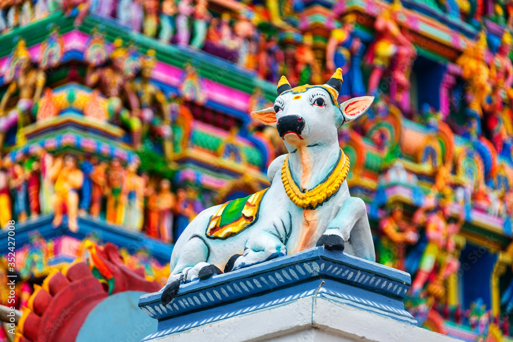

The Kapaleeshwarar Temple is a Hindu temple dedicated to the god Shiva located in Mylapore, Chennai in the Indian state of Tamil Nadu. The temple was built around the 7th century CE and is an example of South Indian Architecture.[1][2] According to the Puranas, Parvati worshipped her husband Shiva in the form of a peahen (mayil in Tamil), giving the vernacular name Mylai (Mayilāi) to the area that developed around the temple.[3] Shiva is worshiped as Kapaleeshwarar, and is represented by the lingam. Parvati is worshipped as Karpagambal (goddess of the wish-yielding tree). The presiding deity is revered in the 7th-century Tamil Shaiva canonical work, the Tevaram, written by Tamil saint poets known as the Nayanars and classified as one of the Paadal Petra Sthalam. The temple has numerous shrines, with those of Kapaleeshwarar and Karpagambal being the most prominent. The temple complex houses many halls. The temple has six daily rituals at various times from 5:30 a.m. to 10 p.m., and four yearly festivals on its calendar. The Aṟupatimūvar festival celebrated during the Tamil month of Panguni as part of the brahmotsava is the most prominent festival in the temple. The temple is maintained and administered by the Hindu Religious and Charitable Endowments Department of the Government of Tamil Nadu.
